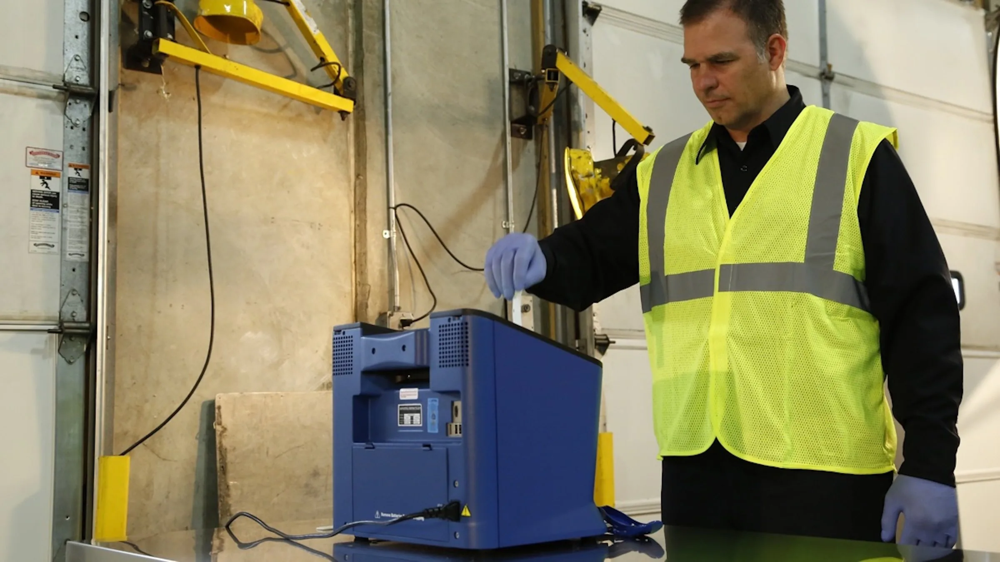
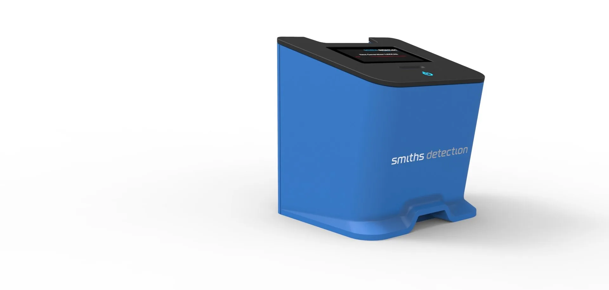
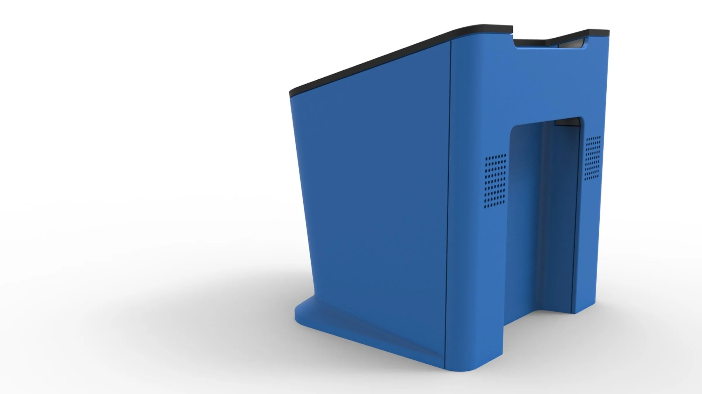
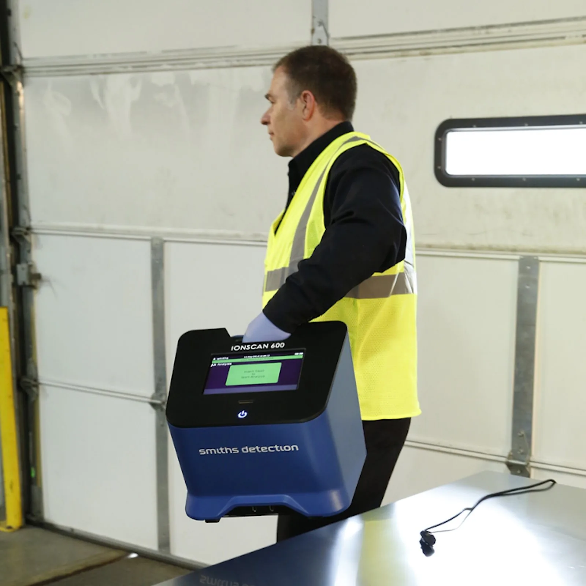
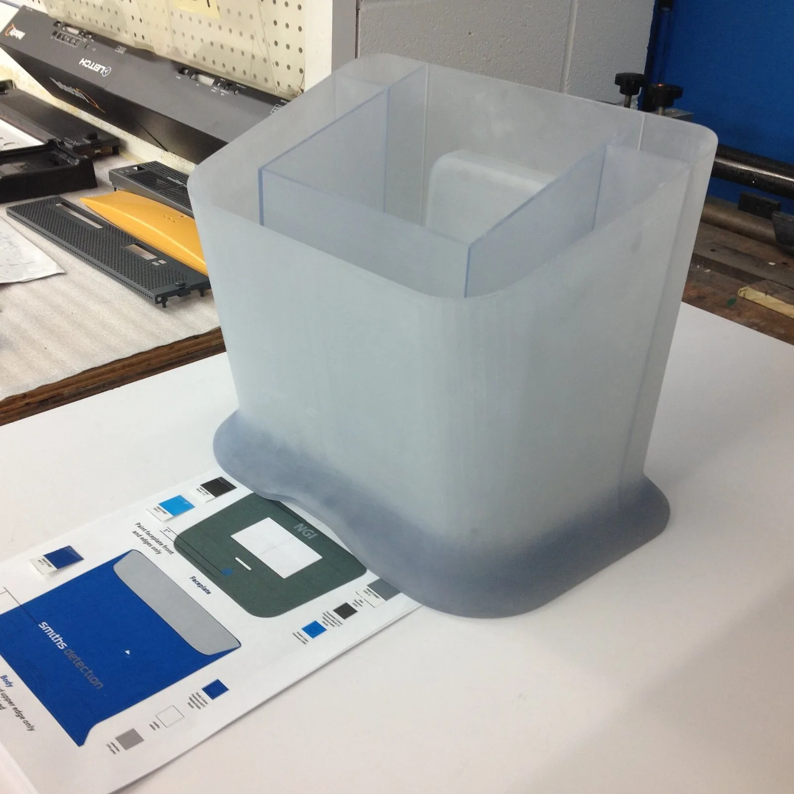
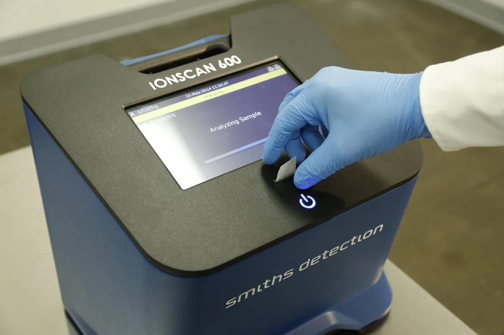
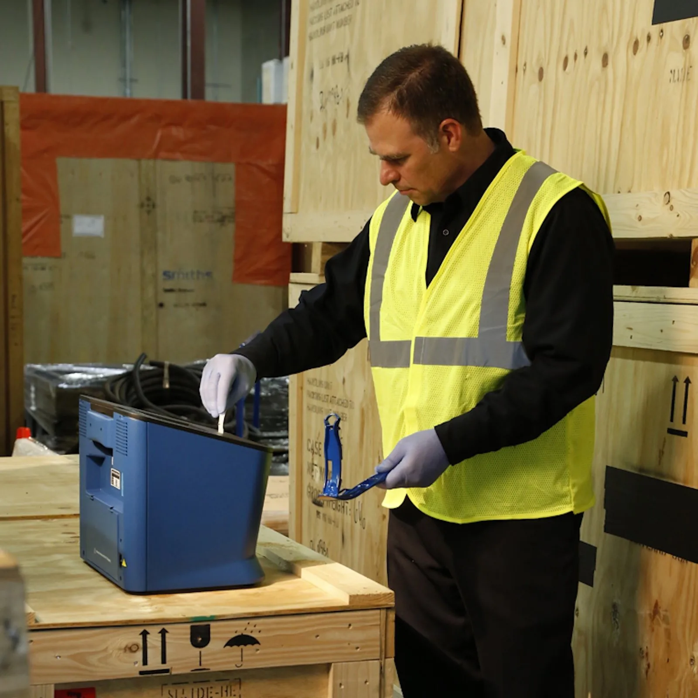

Faster answers. Safer spaces.
Smiths Detection
IONSCAN 600 is a handheld trace detector used to identify explosives during airport and border screening. We redesigned the housing and interface for faster response times and easier one-handed operation in the field, without compromising the ruggedness the platform is trusted for.
The housing is injection-moulded in ABS, with an EMI-shielding coating painted on the inside to meet FCC requirements so the unit doesn't interfere with other electronics nearby. We handled the full mechanical scope, including component placement, mechanical layout, sheet metal design, graphics, and CMF, through prototyping. Because the device is used by people from a wide range of backgrounds in the field, the interface had to be intuitive without instruction, and every fastener on the housing is identical so the unit is quick to service and easy to carry one-handed. IONSCAN 600 is certified by both ECAC and CAAC, the European and Chinese civil aviation authorities.





